Claude Fable 5 · Local Build · 2026
FABLE 25
25 sites one model built locally every pixel procedural
-
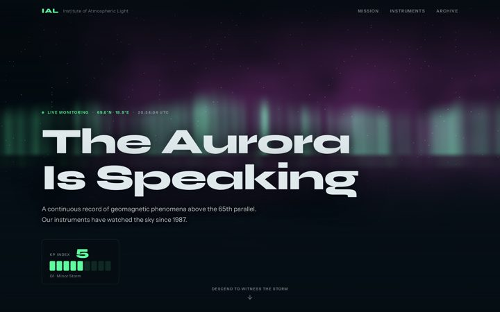
Institute of Atmospheric Light — Aurora Research Station
Continuous monitoring of auroral displays above the 65th parallel since 1987.
-
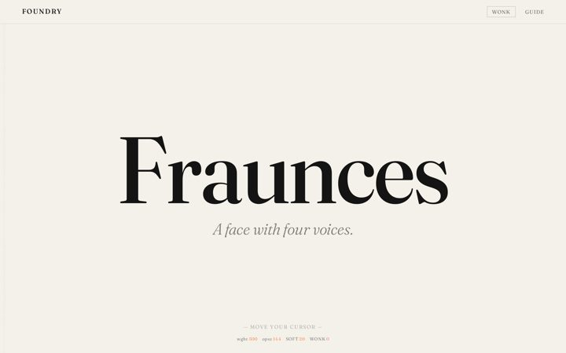
Foundry — Fraunces Typeface
A living specimen for Fraunces — variable weight, optical size, softness, and wonkiness on one axis.
-
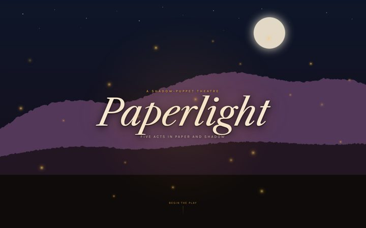
Paperlight — A Shadow-Puppet Theatre
A five-act folk tale in layered paper-cutout scenes. Pure SVG and CSS — no canvas, no WebGL.
-
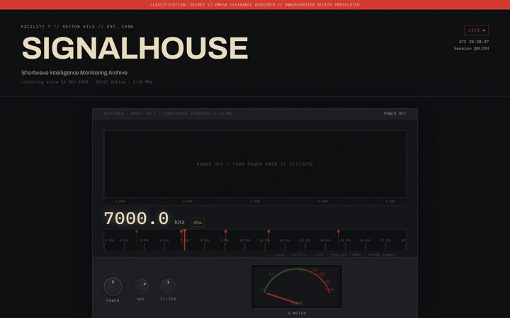
SIGNALHOUSE — Numbers Station Archive
Encrypted shortwave broadcasts from stations with no return address.
-
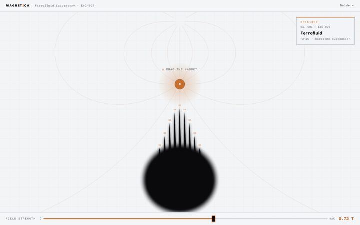
Magnetica — Ferrofluid Laboratory
Drag the magnet. Watch the Rosensweig instability break the surface in real time.
-
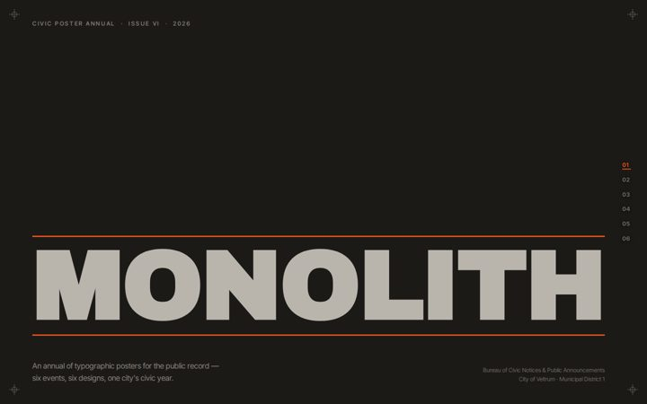
MONOLITH — Civic Poster Annual 2026
Six civic events, six typographic poster designs. City of Veltrum's public record, 2026.
-
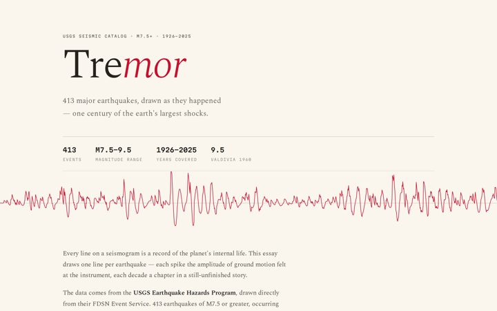
Tremor — A Century of Earthquakes
413 earthquakes, M7.5 and above — a scroll-driven essay on 100 years of USGS seismic data.
-
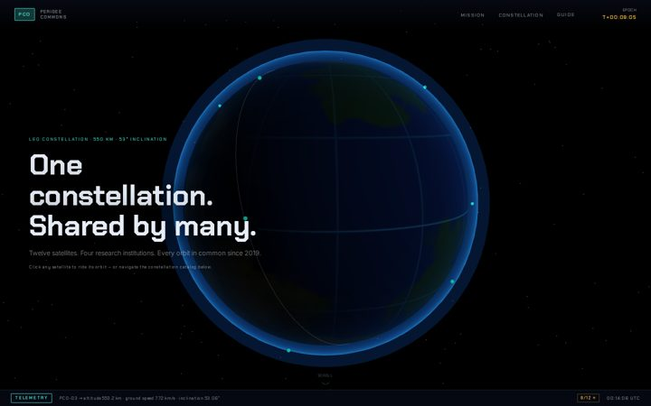
Perigee Commons — Orbital Cooperative
Four research institutions. One shared LEO constellation. All the complications.
-
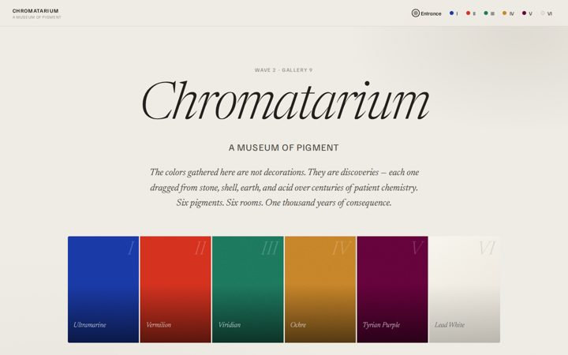
Chromatarium — A Museum of Pigment
Six rooms, six pigments — every wall built from one color's OKLCH mathematics.
-
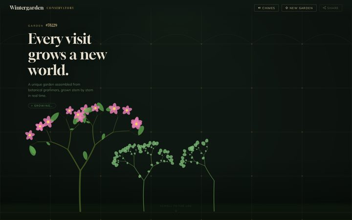
Wintergarden Conservatory
A Victorian glass house after closing time — fog, bloom, and botanical quiet.
-
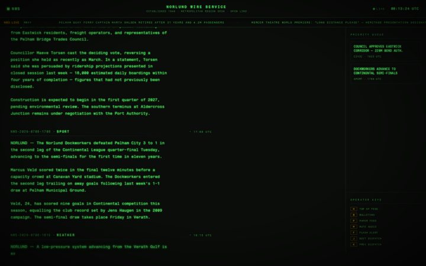
Norlund Wire Service — NWS Live Feed
Live wire-service dispatches from a city that never was.
-
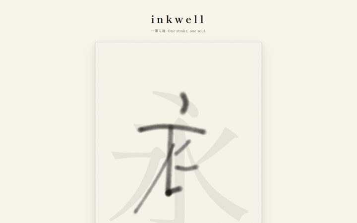
inkwell — Calligraphy Studio
Where ink meets intention — tools, techniques, and the discipline of the hand-drawn letter.
-
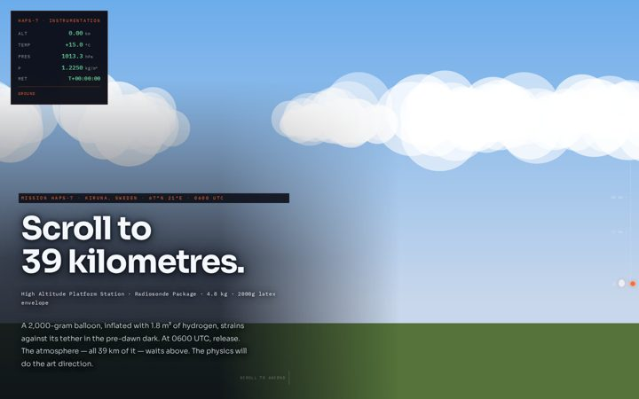
HAPS-7 — High Altitude Balloon Mission
Scroll to 39 km. A physics-driven journey through the layers of the atmosphere.
-
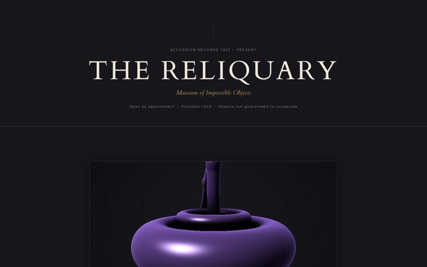
The Reliquary — Museum of Impossible Objects
Five objects that cannot exist, displayed with all the scholarly apparatus they deserve.
-
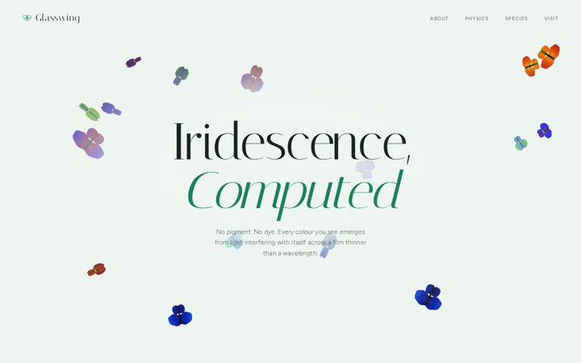
Glasswing Conservatory — Iridescence, Computed
Thin-film interference physics rendered live — structural colour that shifts as you move.
-
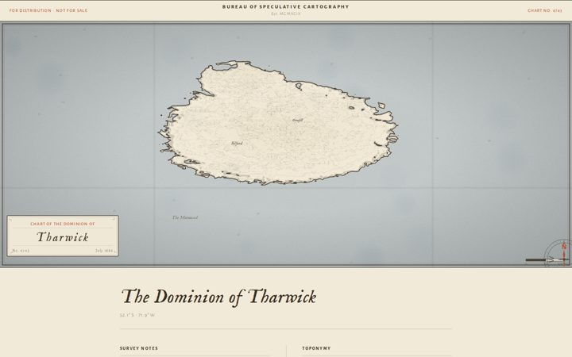
Bureau of Speculative Cartography
Maps for territories that exist only in the cartographer's conviction.
-
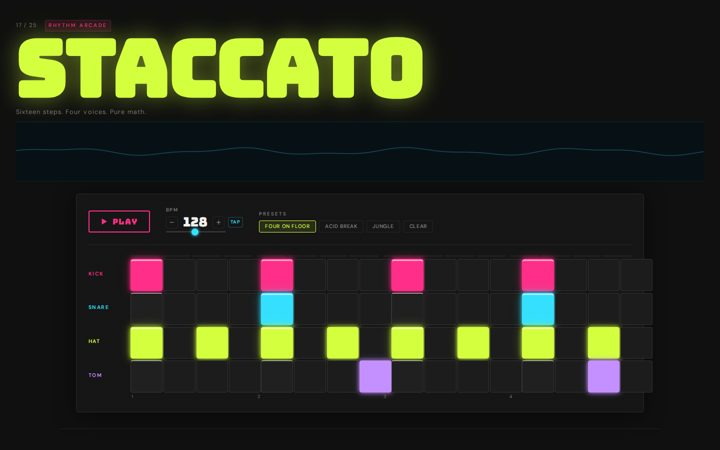
STACCATO — Rhythm Arcade
A browser-native rhythm arcade where every beat is plotted geometry.
-
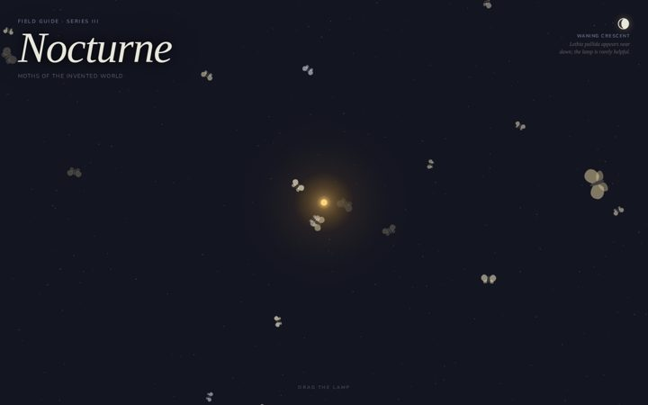
Nocturne — A Field Guide to Moths
Six invented species — procedural engravings and live flight physics around a draggable lamp.
-
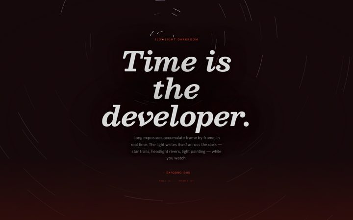
Slowlight — A Long-Exposure Darkroom
Long exposures that develop in real time, frame by accumulating frame.
-
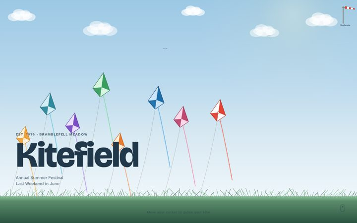
Kitefield — Annual Kite Festival
Every June, the meadow becomes the sky's living room — 200 kites aloft since 1978.
-
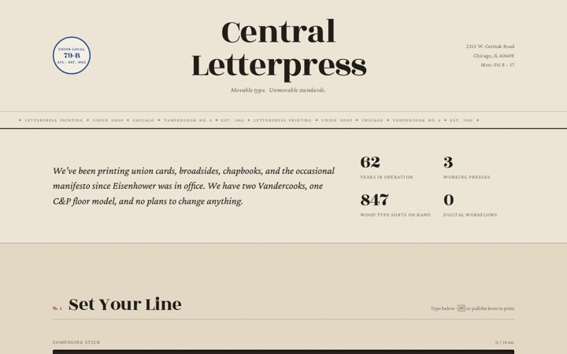
Central Letterpress — Est. 1962
Union letterpress. Movable type. Unmovable standards. Chicago, Illinois.
-
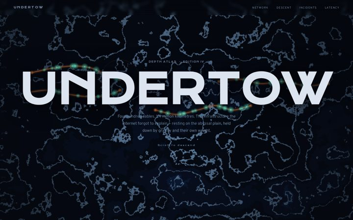
UNDERTOW — An Atlas of the Seafloor Cables
The internet's basement, visited — four hundred cables, 1.4 million kilometres.
-
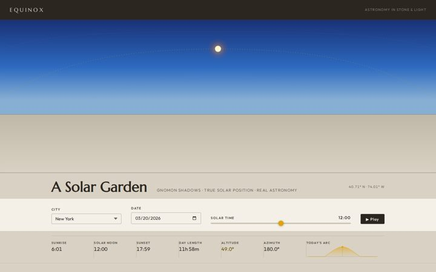
Equinox — A Solar Garden
One garden tracked across a year of shifting light and lengthening shadow.
-
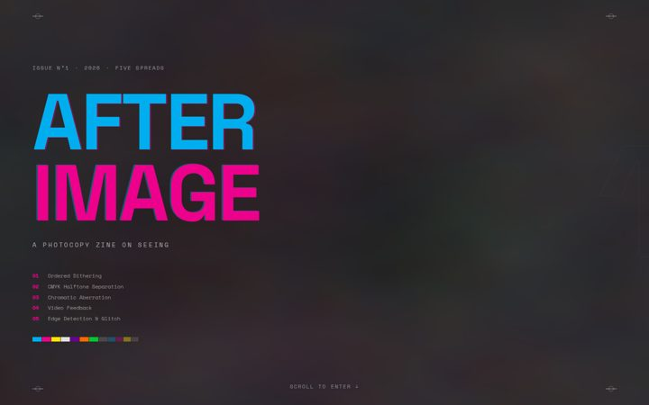
AFTERIMAGE — A Photocopy Zine on Seeing
A zine about vision — degraded, duplicated, and still telling the truth.
-
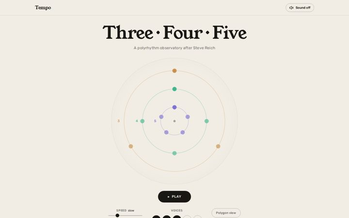
Tempo — A Polyrhythm Observatory
Three pulses against four against five — watch what happens at the crossings.